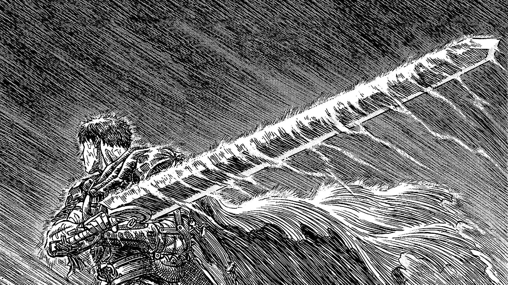

Berserk
Año de estreno: 1997
País de origen: Japón
Género: Acción, Fantasía oscura
Creadores: Kentaro Miura
Sinopsis
Berserk sigue la historia de Guts...
Temporada
- Temporada 1997: 25 episodios
- Temporada 2: 12 episodios (Berserk: The Golden Age Arc)
- Temporada 3: 12 episodios (Berserk: The Golden Age Arc Memorial Edition)
Personajes Principales
| Nombre | Foto | Descripción |
|---|---|---|
| Guts |  | Protagonista de la serie, un guerrero formidable... |
| Griffith |  |
El carismático líder de la Banda del Halcón... |
| Casca |  |
Una guerrera valiente y miembro de la Banda del Halcón... |